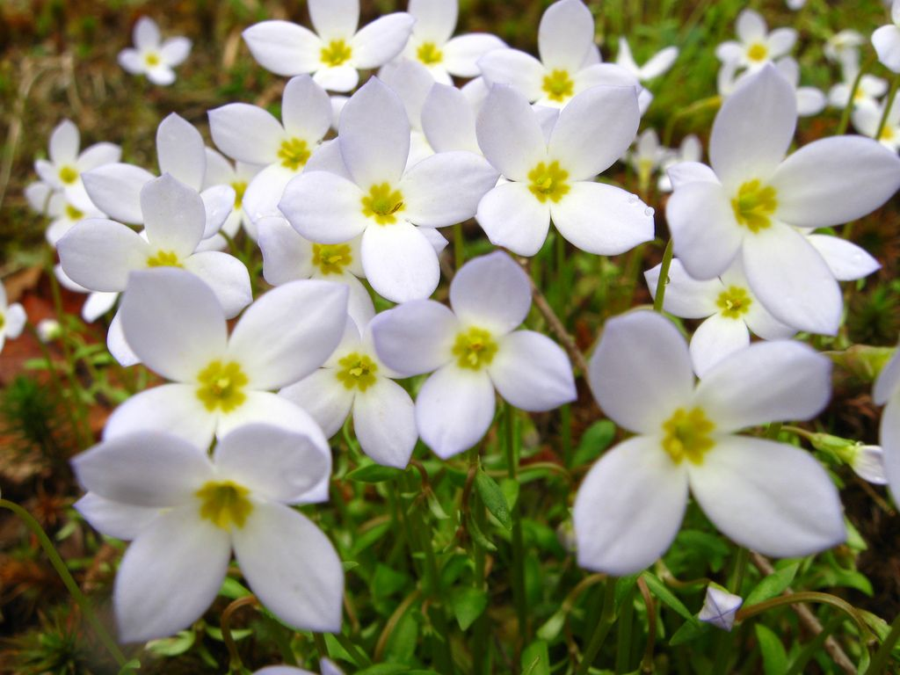
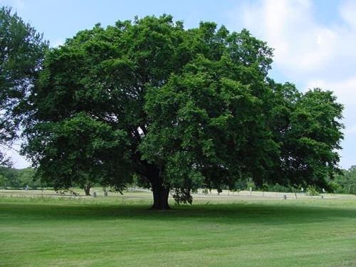

Massachusetts
One of the original 13 colonies and one of the six New England states, Massachusetts (officially called a commonwealth) is known for being the landing place of the Mayflower and the Pilgrims. English explorer and colonist John Smith named the state for the Massachuset tribe. Boston, the state capital, was a hotbed of activity, including the Boston Massacre and the Boston Tea Party, during the American Revolution. In addition to its revolutionary spirit, the state is known for sparking the American Industrial Revolution with the growth of textile mills in Lowell, and for its large Irish-American population.
| Date of Statehood | Capital | Population | Size |
|---|---|---|---|
| February 6, 1788 | Boston | 6.89 million | 10,554 square miles |
Motto
Ense petit placidam sub libertate quietem (“By the sword we seek peace, but peace only underliberty”)
Flower
Mayflower
Bird
Chickadee

Tree
American Elm
Interesting facts
- Established in Cambridge in 1636 by vote of the Massachusetts Bay Colony, Harvard University was the first institution of higher education in the United States.
- Nineteen people were hanged at Gallows Hill in 1692 for worshipping the devil and practicing witchcraft, and close to 200 others were similarly accused. In 1711, after judge Samuel Sewall and others involved in the Salem witch trials had admitted wrongdoing, the colony restored the good names of all accused and granted restitution to their heirs.
- Massachusetts observes a legal holiday called Patriots’ Day on the third Monday of April each year, commemorating the first battles of the American Revolution at Lexington and Concord on April 19, 1775.
- Following the American Revolutionary War, many people struggled to support their families under the heavy tax burdens levied to pay off war debt. Faced with losing their property, a group of insurgents led by Daniel Shays—a farmer and veteran of the war—forced the closure of several debtors’ courts and attempted to occupy a federal arsenal in Springfield on January 25, 1787. Although repelled, Shays’ Rebellion highlighted the need for a stronger national government and influenced the creation of the U.S. Constitution.